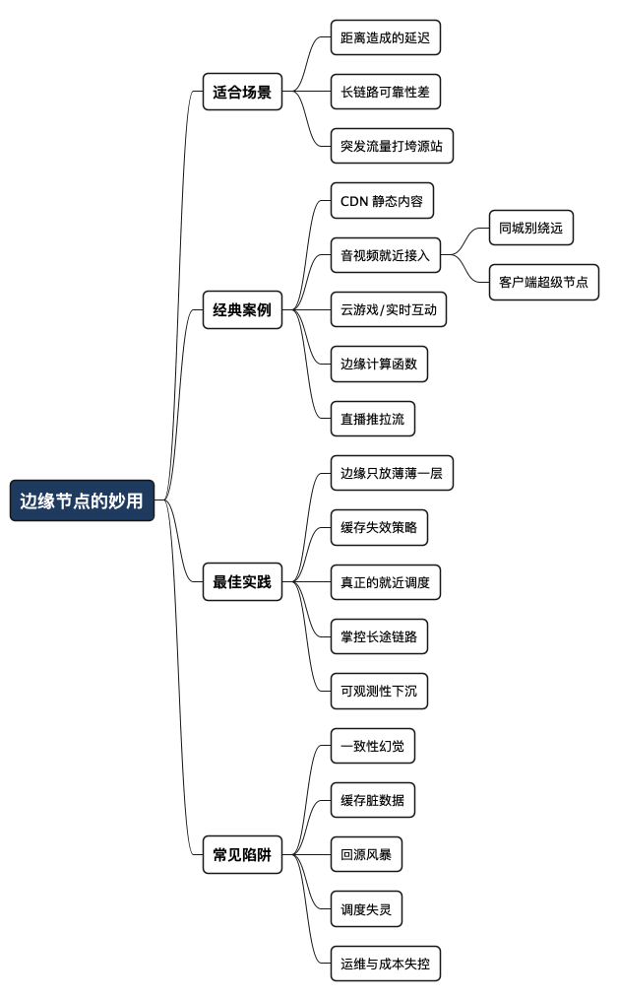

边缘节点的妙用：把服务搬到离用户最近的地方
Posted on 四 20 8月 2026 in Tech
| Abstract | 边缘节点的妙用：把服务搬到离用户最近的地方 |
|---|---|
| Authors | Walter Fan |
| Category | Tech |
| Version | v1.0 |
| Updated | 2026-08-20 |
| License | CC-BY-NC-ND 4.0 |
边缘节点的妙用：把服务搬到离用户最近的地方
先说个我做了很多年的活儿：音视频通信。两个人开视频会，一个在上海，一个在旧金山。如果所有的媒体流都必须先绕到某个中心机房再转发，那这趟路来回就是几万公里的光缆加上一堆路由跳数，单程一百多毫秒起步。人对声音延迟很敏感，超过三四百毫秒，两个人就会开始互相"你先说、不你先说"，会开得很难受。
我们能做的，说穿了就一件事：别让数据跑那么远。 在离用户最近的城市放一个媒体转发节点，上海的人接上海的边缘，旧金山的人接旧金山的边缘，两个边缘之间走优化过的专线。用户到边缘这"最后一公里"又近又稳，跨国的那段则交给我们自己能掌控的骨干网。延迟下来了，丢包也好处理了。
这就是边缘节点（Edge Node）最朴素、也最值钱的用法：把服务、数据或计算，从遥远的中心机房，搬到物理上离用户最近的地方。 这篇想讲清楚四件事——它适合哪些场景、有哪些经典案例、怎么落地、又容易在哪儿栽跟头。急的读者先记住一句话:
边缘节点买的是"近"，付的是"散"。近带来低延迟和高可用，散带来数据一致性和运维复杂度的账单。时间和空间，不可兼得。
- 不是什么：边缘不是"把整个系统复制到一百个机房"。绝大多数系统只需要把很薄的一层放到边缘。
- 是什么：边缘是一种"就近"的架构取舍——用分布换延迟，用冗余换可用，同时接受随之而来的一致性和治理成本。
术语先垫一句。边缘节点指部署在靠近终端用户的接入点（POP，Point of Presence）上的服务器，相对的是集中式的源站 / 中心机房（Origin）。CDN（内容分发网络） 是边缘思想最成熟的产品化形态，本质就是"把内容缓存到离你最近的边缘节点"。下面会反复用到这几个词。
一、什么时候该想到边缘节点
不是所有系统都需要边缘。判断要不要上，先看你手里的痛是不是下面这三类之一。它们对应的正是你被"性能、可靠性、流量"三座大山压住的三种典型情形。
痛点一：延迟下不来，而且是物理下不来
有些延迟是代码问题，加个缓存、改个 SQL 就好了。但有一类延迟是物理定律——光在光纤里跑一公里要 5 微秒左右，北京到伦敦一个来回八千多公里，光速本身就得四五十毫秒，再叠加路由和排队，往返一百多毫秒是常态。这个数字，你优化再多代码也变不了，因为它是距离决定的。
只要你的痛是"距离带来的延迟"，边缘就是几乎唯一的解。 音视频、在线游戏、实时协作、金融行情推送，都属于这一类。
痛点二：链路太长，稳定性靠运气
跨国、跨运营商的公网链路，中间经过的每一跳都是一个可能抖动、丢包、甚至断掉的环节。链路越长，出问题的概率越高，这是简单的串联可靠性：十个 99% 串起来，整体只剩 90%。
边缘的价值在于把长链路拆成两段：用户到边缘的"最后一公里"通常在同城甚至同运营商内，短、稳、可控；边缘之间的长途则走你自己能优化、能监控、能切换的骨干网。把不可控的公网段压到最短，可靠性自然上来。
痛点三：流量太大，源站扛不住
一个热点视频、一次大促、一场直播，瞬时几百万人同时来拉同一份内容。如果全砸到源站，再壮的机器也会被打垮。边缘天然是个分流层和缓冲层：内容在边缘缓存一份，几百万请求被分散到全球几百个边缘节点各自消化，真正回源的可能只有百分之一。源站从"扛洪峰"变成"扛涓流"。
一句话记住这三类信号：
| 你的痛 | 根因 | 边缘能不能治 |
|---|---|---|
| 延迟高，且和用户所在地强相关 | 物理距离 | 能，几乎是唯一解 |
| 跨国/跨网链路不稳 | 长链路串联可靠性差 | 能，把长链路拆短 |
| 突发流量打垮源站 | 请求过度集中 | 能，边缘分流+缓存 |
| 延迟高但和地理无关 | 代码/架构问题 | 不能，先查自己 |
| 强一致的核心事务（如扣款） | 业务本身要求集中 | 慎用，边缘会帮倒忙 |
最后两行是提醒：边缘不是万能药。 如果你的延迟是数据库慢查询造成的，或者你的业务本质上要求强一致（比如账户扣款、库存扣减），硬往边缘搬只会让问题更糟。
二、几个经典案例
抽象讲完，看几个真正把边缘用出花来的例子。它们覆盖了从"只缓存内容"到"把计算也搬过去"的完整光谱。
1. CDN——边缘的鼻祖。 你访问一个网站，图片、JS、视频这些静态资源，绝大多数不是从源站直接来的，而是从离你最近的 CDN 边缘节点来的。这是边缘最成熟、最没有争议的用法：静态内容天生适合缓存，缓存天生适合放边缘。
2. 音视频的媒体就近接入。 前面讲的那个上海—旧金山的例子就是。终端就近连边缘媒体服务器（媒体转发节点），跨区的媒体走优化骨干网。这里边缘搬的不只是数据，还有媒体转发这个计算动作——混流、转码、丢包重传，都可能发生在边缘。
但还有一个更土、也更常被忽略的问题：如果开会的人都在一个局域网、一个城市里，为什么还要到千里之外的媒体服务器上绕一圈？ 十个人坐在同一栋楼，每一路音视频先飞去大洋彼岸的机房，再飞回来——这不是物理定律，是拓扑图偷懒。两人通话，WebRTC 本来就可以点对点；人一多，大家图省事，全塞进云上那个转发节点。省事的代价是：同城会议也被当成跨国会议来跑。
所以“就近”其实有三层，一层比一层更近：
| 近到哪 | 媒体走哪 | 典型场景 |
|---|---|---|
| 同城 / 同区域边缘 | 终端 → 附近媒体节点 →（跨区才走骨干） | 上海接上海，旧金山接旧金山 |
| 客户内网节点 | 媒体不出园区，满了再溢出到云 | 全员在公司办公网开会 |
| 客户端超级节点 | 资源够的那台机器临时当转发点 | 同一局域网、弱网上云很贵或很慢 |
第三层就是那个自然会冒出来的问题：资源充足的 Client，能不能化身为一个超级服务节点？ 能。别人把流送给它，它在本地转发给其他人，云只负责信令和会控。Skype 当年就靠这套 P2P 思路起家：带宽好、有公网 IP 的普通机器会被选为节点，帮别的用户分担活儿——需要说明的是，Skype 把职责拆得很细，负责信令和目录的叫 Super Node，真正在双方直连不通时中继音视频的叫 Relay Host，两者是两个角色。会议室里那台性能好的电脑、甚至一台闲置工位主机临时当转发点，走的都是"让有余力的一端替大家转发"这个思路。Cisco Webex 的 Video Mesh 更进一步：把媒体处理直接放到客户机房，人在内网就尽量别出网，本地资源不够了才 overflow 到云。
这条路不是空想，但也不能当默认。那台“超级节点”合上盖、断网、离席，整场会就跟着晃；它的上行带宽和 CPU 要扛所有人的转发；家里的 NAT 往往不让别人连进来；别人的音视频从你电脑过，信任和合规也不是小事。云上的录音、电话接入、转写，还是得有一条路接到中心。更常见的用法是折中：局域网里先本地转发，进来一个远程用户，再从超级节点 cascade 一跳到边缘——本地的人别为那一个人出国绕路。
3. 云游戏 / 实时互动。 画面在云端渲染，再推给用户。玩家的每一次按键到看到画面反应（操作延迟）必须极低，否则手感全毁。所以渲染节点必须离玩家足够近——这是把重计算（GPU 渲染）也搬到了边缘。
4. 边缘计算函数（Edge Functions）。 Cloudflare Workers、各家云厂商的 Edge Function，让你把一小段逻辑（改写请求、A/B 分流、鉴权、个性化）直接跑在边缘节点上，请求根本不用回源。这是从"边缘只缓存"进化到"边缘也算"的代表。
5. 直播的边缘推拉流。 主播推流到最近的边缘，观众从最近的边缘拉流，中间靠边缘之间的转推网络串起来。百万观众看同一场直播，靠的就是这张边缘网把压力摊开。
你会发现一条清晰的演进线：边缘搬的东西越来越“重”——从只搬静态内容（CDN），到搬数据+转发计算（音视频），再到搬完整计算逻辑（Edge Function、云游戏）。 搬得越重，收益越大，代价也越大。音视频这条线还有个尽头：近到这间会议室、这台电脑。
三、最佳实践：怎么把边缘用对
想清楚要上边缘之后，落地时下面这几条能帮你少走弯路。核心取向是一句：边缘只放"薄薄一层"，把复杂和权威留在中心。
-
边缘只做"接入、缓存、转发、就近计算"，别把状态和权威数据放上去。 边缘节点应该尽量无状态或弱状态。真正的数据源、强一致的事务、账户余额这类东西，留在中心。边缘挂了一个，用户切到另一个边缘就行，不能因为一个边缘节点丢了就丢数据。
-
给缓存设计明确的失效策略，别让"近"变成"旧"。 边缘最大的甜头是缓存，最大的坑也是缓存。一定要想清楚：内容能缓存多久（TTL）？源站更新了怎么通知边缘失效（主动 purge 还是被动过期）？哪些内容根本不能缓存（用户私有数据）？把这几条写死在设计里，别等出了"用户看到别人数据"的事故才补。
-
就近调度要真"就近"，别只看 IP 归属地。 把用户导到哪个边缘，是边缘系统的大脑。常见做法有 DNS 调度、Anycast、以及应用层探测。IP 归属地经常不准（尤其移动网络），有条件的话用实时探测（比如让客户端 ping 几个候选边缘，选最快的）来纠偏。调度错了，边缘再多也白搭——把上海用户导到广州的边缘，还不如不导。
-
边缘之间的长途链路，要自己能掌控、能切换。 用户到边缘那段你管不了（是运营商的），但边缘到边缘、边缘到源站那段要尽量走你能监控、能优化、能故障切换的骨干或专线。这一段是你和竞争对手拉开差距的地方。
-
可观测性要下沉到边缘。 节点一多，"哪个边缘出问题了"就成了排查噩梦。每个边缘的延迟、丢包、缓存命中率、回源率，都要能单独看到、能聚合看到。没有这套监控，你会在几百个节点里抓瞎。
一句话：
边缘做减法，中心做加法。边缘只放"必须靠近用户"的那薄薄一层，其余复杂度全部留在中心。
四、常见陷阱
见过太多团队兴冲冲上了边缘，最后被下面这几个坑绊住。提前知道，能省很多夜。
-
一致性幻觉。 以为"边缘也能强一致"。分布式系统的 CAP 摆在那儿——节点一散、网络一分区，一致性和可用性你只能选一个。硬要边缘强一致，要么性能被拖回原形，要么在分区时直接不可用。能接受最终一致的才往边缘搬，需要强一致的老老实实放中心。
-
缓存脏数据。 前面说过但值得单拎出来：最惊悚的边缘事故往往不是慢，而是用户 A 看到了用户 B 的数据——因为把不该缓存的私有内容缓存到了边缘，还被别人命中了。缓存 key 里少带一个用户维度，就可能酿成数据泄露。
-
回源风暴（缓存击穿）。 某个热点内容在边缘的缓存同时过期，几百万请求瞬间一起回源，源站被自己的边缘打垮。要用请求合并（同一时刻只放一个回源请求）、错峰过期等手段防住。
-
调度失灵，边缘成了绕路。 调度算法把用户导到了更远或更差的节点，用户体验反而不如不上边缘。同城、同局域网的会议被派到千里外的媒体节点，就是这个坑的日常版。这种问题最隐蔽，因为平均延迟看着还行，但某一批用户被坑得很惨。要看 P99、按地区分桶看，别只看平均值。
-
运维复杂度爆炸。 一个机房变成几百个节点，发布、配置、灰度、回滚、监控全部要乘以节点数。很多团队低估了这笔账，上线后发现"改一个配置要在两百个节点上生效"是个大工程。边缘的运维成本，是你为"近"付的最大一笔隐性费用。
-
成本失控。 边缘节点越多，机器、带宽、运维人力越贵。要算清楚：多花的这些钱，换来的延迟下降和可用性提升，业务上值不值。不是所有场景都值得铺满全球边缘——有时候放三五个关键区域就够了。
总结：边缘买的是"近"，付的是"散"
回到开头那个上海—旧金山的视频通话。边缘节点解决的从来不是"某段代码不够快"，而是"距离太远"这个物理问题。它把服务搬到离用户最近的地方，用低延迟、高可用、能分流，换来数据一致性、运维复杂度和成本这三笔账。
所以判断要不要上边缘，别看它多时髦，就问三个问题：我的痛是不是距离造成的？我能不能接受最终一致？我付得起这份"散"的账单吗？ 三个都是"是"，边缘就是那把最趁手的刀；有一个是"否"，先别急着搬。
时间和空间不可兼得，这是老话，也是边缘架构的底色。你想要更快地抵达用户，就得接受系统被摊得更开、更难管。 认清这笔交易，再决定要不要做。
全文思维导图
@startmindmap
<style>
mindmapDiagram {
node {
BackgroundColor #F8F9FA
RoundCorner 10
Padding 10
FontSize 13
}
:depth(0) {
BackgroundColor #1E3A5F
FontColor white
FontSize 18
FontStyle bold
}
:depth(1) {
FontSize 15
FontStyle bold
}
:depth(2) {
FontSize 13
}
}
</style>
* 边缘节点的妙用
** 适合场景
*** 距离造成的延迟
*** 长链路可靠性差
*** 突发流量打垮源站
** 经典案例
*** CDN 静态内容
*** 音视频就近接入
**** 同城别绕远
**** 客户端超级节点
*** 云游戏/实时互动
*** 边缘计算函数
*** 直播推拉流
** 最佳实践
*** 边缘只放薄薄一层
*** 缓存失效策略
*** 真正的就近调度
*** 掌控长途链路
*** 可观测性下沉
** 常见陷阱
*** 一致性幻觉
*** 缓存脏数据
*** 回源风暴
*** 调度失灵
*** 运维与成本失控
@endmindmap

本作品采用知识共享署名-非商业性使用-禁止演绎 4.0 国际许可协议进行许可。 欢迎在我的个人网站 https://www.fanyamin.com 访问原文并评论。